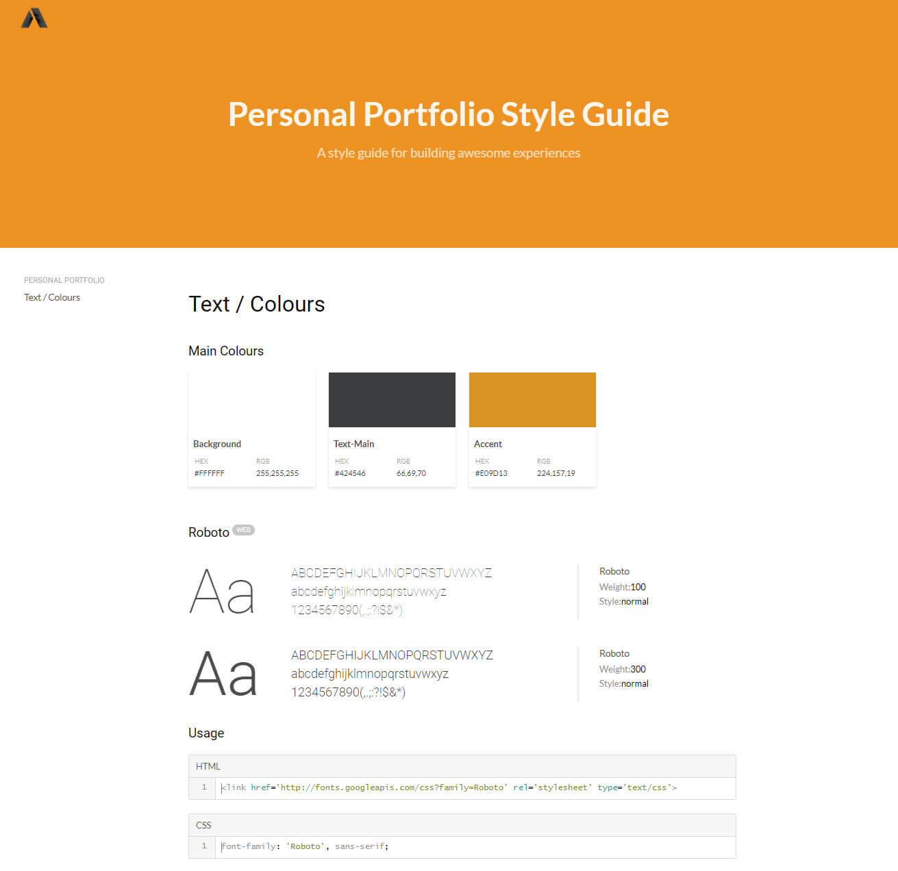
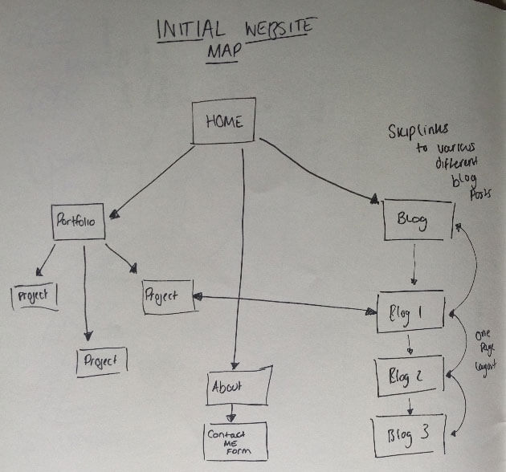
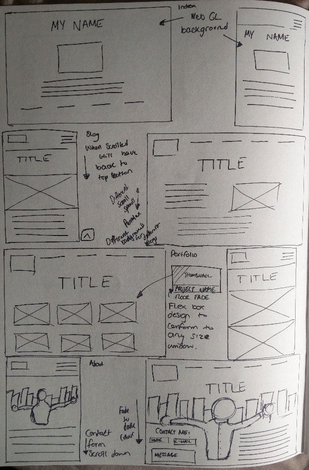

Building my Portfolio
The Process
If you are here you have most likely had a wander around my website. Hopefully, you like it. I’ll give you some insights on the tools and processes I used to help me build this site from the ground up.
Research
I believe research is the backbone of everything you do. When it came to this I wanted to know how I could best display all the information I needed to in a responsive way. I looked at websites such as Emily Ridge and Steven Mengin to gain an understanding of portfolio layouts. These sites are unique in the sense they are achieving the same goal just in a different way. Emily’s website has a lot of information displayed in a clear grid fashion whereas, Steven’s has WebGL navigation which makes a pleasant browsing experience. I strive to achieve this level of portfolios soon.
Design
Coming from a graphic design background I believe I have a good understanding of the process to design. But when designing for the web I had to think about how I would put it together and what technology would go into certain parts of the design. Initially, I just came up with some sketches from the website as I was doing the research. As time went on I developed these further and they turned into wireframes.
Typography is the biggest design aspect of a website. Coming from my design background I knew a little about it on logos and magazines but I wasn't so sure about how to display it on the web. I read an article about fluid typographic from smashing magazine it explained what margins I should have on my body text to make it easier for the user to read. Using that information on this website so hopefully, this is easy for you to read. My main design decision for the type of this website was readability. I chose to go with Roboto.
Let's get coding? No, Style Guide, Site Mapping and Wireframes
Style guide
Initially, my colour scheme wasn't great. According to the Colour Contrast Analyser, the readability was not great. An old tutor of mine once said “less is more” so I decided on a three tone. I used web app called frontify to create my style guide as it compiles it into an easy to read document. The design I was going for was a flat design that's highly accessible.
Having gone through multiple iterations of a colour scheme I also went through different colours of my logo and how that would affect my visual hierarchy and I didn't want it to get in the way of the content. I didn't make it my accent colour because of the content, in my opinion, is more of the focus.
Site Mapping
With the process of designing a website file structure is key. Without it, you can get lost where things are and what goes where. I drafted up what pages I would have on my site. I used it to know what subfolders I would need. It turned out to be an invaluable tool.
Wire Frames
The bread and butter of designing a webpage. Collating all my other information this step gave me an insight on what I was going to make without a single line of code. It’s used widely in companies today because it’s the most efficient way to change things if you don’t like it.
The real problem, Responsive Navigation
A big problem in my eyes is the hamburger menu. I read a interesting article that gives a solution to this problem. He starts the article out with a quote “out of sight out of mind”. To a user, a hamburger menu would be out of site and require more action for them to go navigate through a site. The solution was simple and it is being used today in many apps like Twitter/Reddit, it’s a bottom navigation bar.
To coding, SCSS and Flexbox
These are two main technologies I used. SCSS is a great CSS pre-processer to keep your CSS clean and making it manageable with it being 1000+ lines. Flexbox is a life saver. Introduced in 2014 and been adopted by many companies it lays a great foundation for responsive web design with only a few lines of code. With these, I could make my website conform to any viewport and not hinder the design.
Creating my portfolio was a difficult task. I had to adopt all the knowledge I knew and even learn some more to make an accessible and functional portfolio. I believe it’s given me the knowledge to move on to bigger projects in the future.
Word Count: 773
Refrences:
Lmjabreu.com. (2017). Why and How to Avoid Hamburger Menus - Louie A. - Mobile UX Design. [online] Available at: https://lmjabreu.com/post/why-and-how-to-avoid-hamburger-menus/ [Accessed 30 Oct. 2017].
Riethmuller, M. (2017). Responsive Font Size And Fluid Typography – Smashing Magazine. [online] Smashingmagazine.com. Available at: https://www.smashingmagazine.com/2016/05/fluid-typography/ [Accessed 30 Oct. 2017].